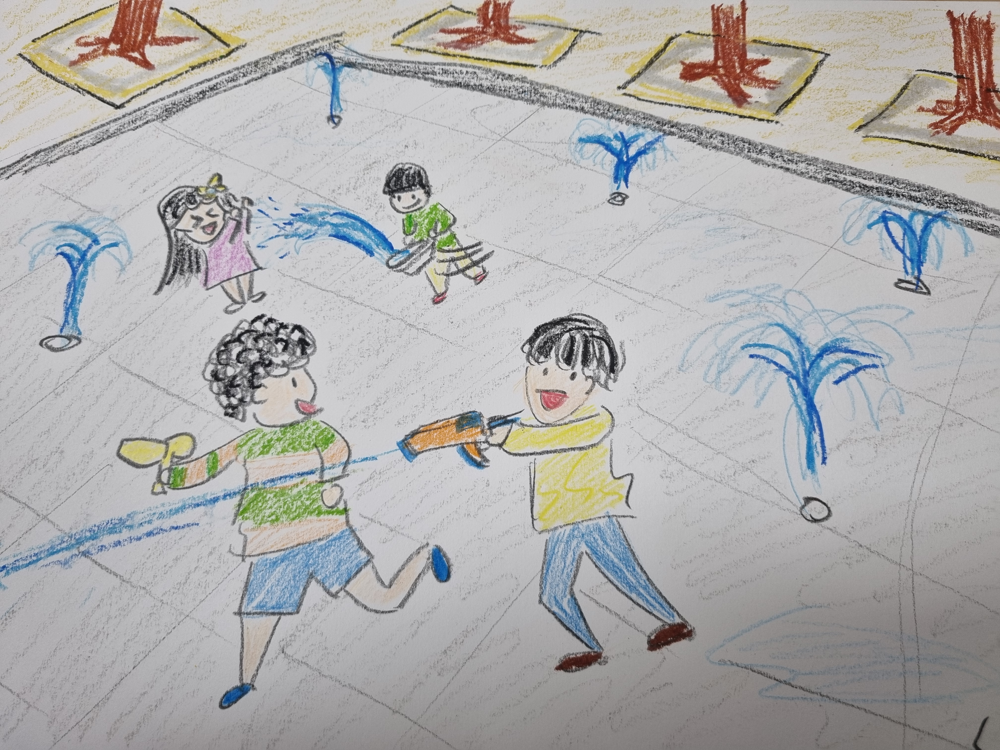
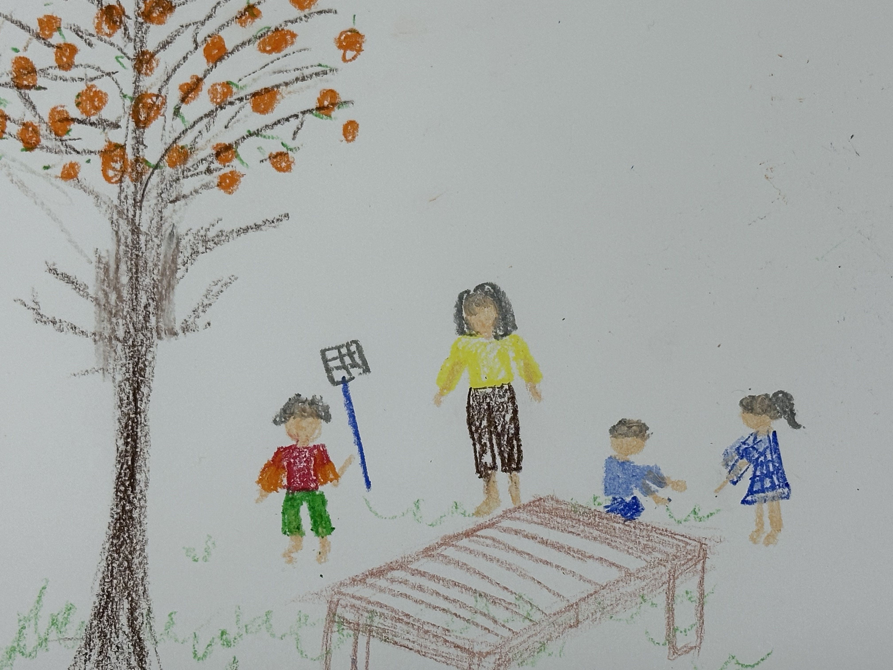
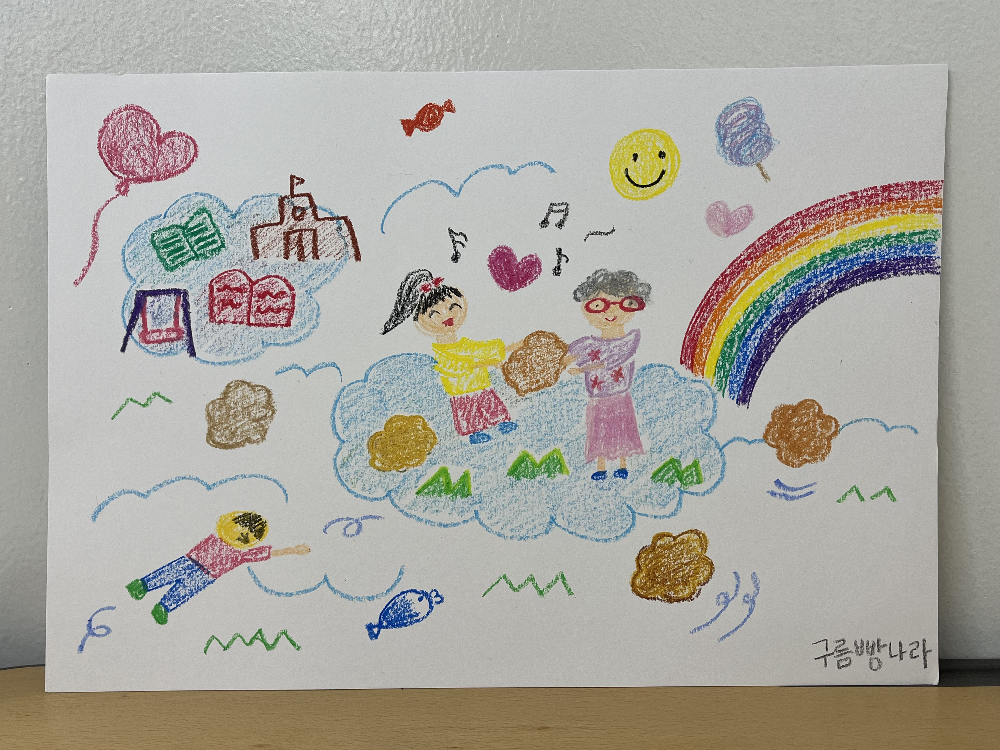
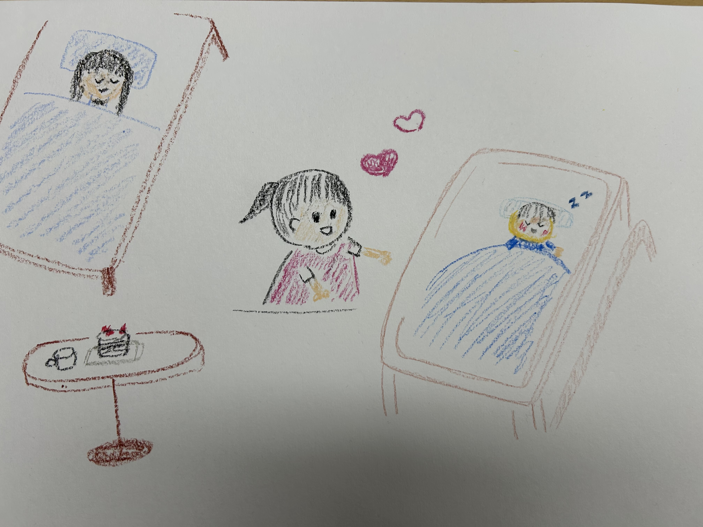
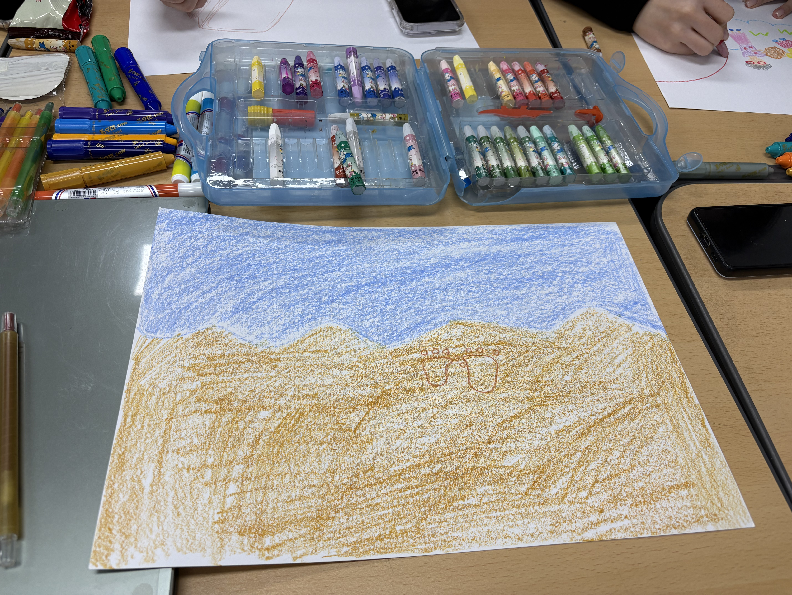

이 그림은 제가 어렸을 때 유치원에서 있었던 일을 그린 거예요.
모두 함께 아주 큰 공원에 가서 친구들과 시원하게 물놀이를 했어요. 수영복을 입지 않고 평소에 입는 옷을 입은 채로, 바닥에서 솟아오르는 분수 사이를 신나게 뛰어다녔죠. 다른 친구들은 모두 물총을 쏘며 놀고 있는데, 저 혼자만 세숫대야를 들고 있었어요. 저만 물총이 없는 게 너무 속상해서, 엄마한테 "왜 나만 세숫대야예요!" 하고 떼를 쓰고 말았어요. 입을 삐죽 내밀고 있었는데, 물놀이가 거의 끝날 때쯤 엄마가 짜잔! 하고 엄청나게 커다란 물총을 사 오셨어요. 제가 속상해하는 모습을 보고, 엄마가 땀을 뻘뻘 흘리며 돌아다니셔서 친구들의 물총보다 훨씬 큰 물총을 구해오신 거예요. 기분이 날아갈 듯이 좋았지만, 한편으로는 엄마한테 떼를 쓴 게 미안해서 마음이 찌릿찌릿하기도 했어요. 엄마의 따뜻한 사랑을 듬뿍 느낄 수 있어서, 지금까지도 잊지 못하는 소중한 하루랍니다.
김지호, 2026
물놀이에서 엄마의 사랑을 느꼈어요
우와, 파란색 물감을 주웠더니, 다른 친구들의 행복한 그림이 많이 있어요. 하나씩 감상해볼까요?
친구들과 분수에서 신나게 물총놀이를 했어요. 그리고 엄마와의 특별한 기억도 남아있는 그림이에요.
“친구들은 물총을 들고 있는데, 뒤에 있는 친구는 세숫대야를 들고 있네! 물총이랑 세숫대야로 물놀이를 하면 어떤 소리가 날 것 같아?” 아이가 장면을 상상하며 감각적으로 표현할 수 있도록 이야기해보아요.

저는 어렸을때 아파트가 아니라 마당이 있는 집에서 살아봤어요. 여기서 봄부터 겨울까지 살았는데, 가을이 되면 주황색 말랑한 감이 감나무에 주렁주렁 매달렸어요. 우리집은 엄마와 아빠 그리고 동생들까지 5가족이 함께 살았는데 모두 잘익은 감을 좋아했어요. 그런데 감을 계속 따서 먹으니까 점점 가장 위에 있는 감만 남게 되었어요. 나와 동생들은 맨 위에 감을 따보려고 했지만 딸 수 없었어요. 그건 우리 집에서 제일 키가 큰 아빠만 따실 수 있었어요! 그래서 감을 먹고 싶었던 우리는 아빠가 일을 끝내고 집에 오실 때까지 마당에 나와 아빠를 기다렸어요. 아쉽게도 다음 가을에는 높은 아파트로 이사를 가서 마당에 감을 먹을 수 없게 되었지만, 가을이 되면 기억나는 행복하고 따뜻했던 시간이에요.
신하선, 2026
맛있는 감을 사랑하는 가족과 먹었어요.
가을이 되고 감나무에 열매가 열렸어요.
우리들은 딸 수 없어서 키가 큰 아빠가 일을 끝내고 돌아와서 따줄 때까지 기다리고 있어요.
“감나무 맨 위에 달린 감은 왜 가장 늦게까지 남아 있었을까?” 아이가 나무와 열매를 자유롭게 상상하며 이야기할 수 있도록 질문해보아요.

저는 어린 시절 ‘구름빵’ 동화를 좋아했습니다. 아이들이 엄마가 만들어준 구름빵을 먹고 날아다니며 아침을 못 드신 아빠께도 배달을 해주는 내용이지요.
거기서 영감을 받아 제가 꿈꾸는 행복한 세상을 그려보았습니다. 아이들이 하늘로 날아올라 할머니께 빵을 나눠드리기도 하고, 구름 위 학교에서 즐겁게 공부하며 꿈을 키워가는 따뜻한 공동체의 모습을 담았습니다.
안정현, 2026
따뜻한 마음을 나누는 공동체
할머니와 즐겁게 놀며 웃고 있어요.
동화에서 봤던 구름빵도 굴러가네요.
머리속에서 상상하는 따뜻하고 재미있는 것들이 마구마구 떠오르는 그림이에요.
아이가 “하늘을 날고 있어요!”라고 말한다면, “정말 두둥실 떠가는 것 같네. 바람이 얼굴에 살랑살랑 닿았겠다.”라고 공감하며 감각적인 표현을 덧붙여보아요.

이 그림은 제가 4살 때 남동생이 태어난 날을 떠올리며 그렸어요.
저는 어렸을 때 기억 중에서 이 날이 가장 기억에 남아 있어요. 동생이 태어나기 전부터 많이 기대하고 있었는데 태어났다는 소식을 듣고 아빠랑 병원에 가서 동생을 만났어요. 작은 침대에 누워 있는 동생을 보고 너무 신기하고 조용히 잠들어 있는 모습이 매우 귀엽게 느껴졌어요. 동생의 작은 손을 잡으면서 지켜주고 싶다는 생각이 들었어요. 이 그림에서는 그때의 마음이 전달되도록 동생의 작음과 저의 기뻐 보이는 표정을 의식하여 그렸어요. 또한 주변에 하트와 밝은 색을 사용함으로써 그때의 따뜻한 마음과 가족이 늘어난 기쁨을 표현했어요.
사호, 2026
소중한 존재가 생겼어요.
동생이 태어난 순간이에요. 동생이 자고 있는게 너무 신기해요.
동생이 너무나도 작아서 지켜주고 싶어요. 아빠와 함께 동생을 처음 만났던 따뜻한 기억이에요.
“아주 작은 동생의 손은 어떤 느낌이었을까? 솜처럼 부드러웠을까?” 아이가 기억과 감각을 연결해 이야기해보도록 도와줘요.

이 작품은 어린 시절 엄마와 함께 바닷가에 갔던 기억을 떠올리며 표현한 그림이에요.
모래사장에 남긴 발자국이 시간이 지나 파도에 의해 사라지는 모습을 보고 신기했던 경험을 담았어요. 넓은 모래사장과 바다를 단순하게 표현해 어린아이의 순수한 느낌과 잔잔한 분위기를 나타냈고, 가운데 있는 발자국으로 지나간 시간의 흔적과 추억을 표현했어요. 또 따뜻한 갈색 모래와 시원한 파란색 바다처럼 서로 다른 색을 사용해 그림이 더 생생하게 보이도록 했어요. 크레파스로 색을 칠하며 바다와 모래의 느낌을 자유롭게 표현할 수 있었고, 단순한 풍경 속에서도 자신의 기억과 마음을 담아낼 수 있다는 점이 인상 깊었어요.
신채민, 2026
파도가 지나가면 발자국이 사라져요
엄마와 바다에 갔어요. 모래사장에 남은 발자국이 파도가 지나가니까 사라졌어요.
친구들의 그림들을 보니까 나도 행복했던 기억을 그려서 선물로 주고 싶어요. 어떤가요?
아이가 “바닷가에 가본 경험이 있어? 누구와 무엇을 했어?” 라고 질문해보아요. 아동이 자신의 경험을 떠올려 볼 수 있도록 해봅시다.